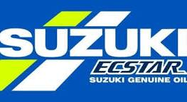

Suzuki Ecstar
Who is the Owner of this team ?
The team is operated by Suzuki Motor Corporation, with "Ecstar"—Suzuki’s own high-performance oil brand—as the title sponsor since their re-entry into MotoGP in 2015.
Origin of the team
Suzuki returned to the MotoGP World Championship in 2015 after a hiatus, launching the factory team under the name Team Suzuki Ecstar, chosen to highlight their global oil brand across races worldwide.
Achievemet of the team
The milestone year for the team was 2020, during which Joan Mir secured the Riders’ World Championship, and Team Suzuki Ecstar clinched its first-ever Teams’ Championship, marking Suzuki's first premier-class title since 2000.
Formed in which year
Although Suzuki has a long racing heritage, the modern Team Suzuki Ecstar identity officially began in 2015.
Years with major wins
The landmark year was 2020, where they achieved a dual triumph—rider and team championships—making it their most successful season .The team withdrew from MotoGP at the end of 2022, winning its final race with rider Álex Rins.
The famous riders of team